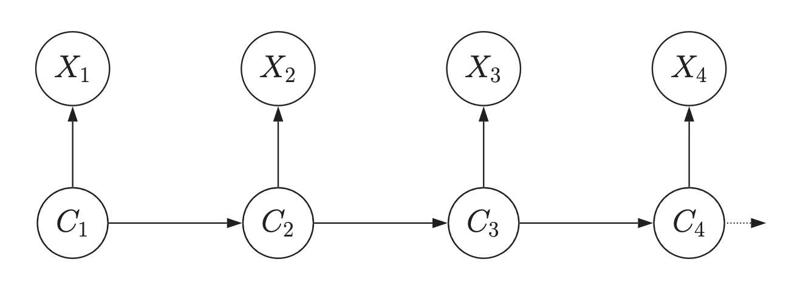

import os
import itertools
import logging
import pandas as pd
import numpy as np
import matplotlib.pyplot as plt
import arviz as az
from scipy import stats
import bambi as bmb
import cmdstanpy
from cmdstanpy import CmdStanModel
cmdstanpy.utils.get_logger().setLevel(logging.ERROR)
import networkx as nx
import warnings
warnings.simplefilter(action="ignore")109 Modello di Markov nascosto
Prerequisiti
- Leggere Evidence for Mood Instability in Patients With Bipolar Disorder: Applying Multilevel Hidden Markov Modeling to Intensive Longitudinal Ecological Momentary Assessment Data di Mildiner Moraga et al. (2024).
- Leggere l’Appendice R.
Concetti e competenze chiave
- Comprendere la struttura e l’utilizzo degli HMM per modellare sistemi in cui gli stati nascosti evolvono nel tempo e influenzano le osservazioni visibili.
- Distinguere tra stati latenti (non osservabili direttamente) e dati osservabili, e comprendere come gli HMM inferiscono stati nascosti basandosi su osservazioni visibili.
- Conoscere il significato e l’importanza della matrice di transizione, che rappresenta le probabilità di passaggio tra stati nascosti consecutivi.
- Capire il ruolo della matrice di emissione, che descrive la probabilità di osservare determinate categorie in base allo stato nascosto del sistema.
- Sviluppare la capacità di interpretare i risultati dell’analisi HMM, inclusa la valutazione delle stime posteriori per le matrici di transizione e di emissione e la loro coerenza con le aspettative teoriche.
- Comprendere come gli HMM possono essere utilizzati per analizzare dati clinici, come quelli relativi al disturbo bipolare, e per inferire stati emotivi basati su osservazioni indirette.
Preparazione del Notebook
seed: int = sum(map(ord, "hmm"))
rng: np.random.Generator = np.random.default_rng(seed=seed)
az.style.use("arviz-darkgrid")
%config InlineBackend.figure_format = "retina"
# Get the home directory
home_directory = os.path.expanduser("~")
# Construct the path to the Quarto project directory
project_directory = os.path.join(home_directory, '_repositories', 'psicometria')Introduzione
Immaginiamo di osservare il comportamento di un amico, ma senza poter leggere la sua mente. Questo è il concetto alla base dei modelli nascosti di Markov (HMM, dall’inglese Hidden Markov Models). Gli HMM sono come un gioco in cui si cerca di indovinare cosa sta pensando qualcuno basandoci solo sulle sue azioni. In questo “gioco”:
- Il pensiero o lo stato d’animo del nostro amico rappresenta lo “stato nascosto”. Non possiamo vederlo direttamente.
- Le azioni o il comportamento del nostro amico sono le “osservazioni” che possiamo vedere.
- Lo stato d’animo del nostro amico cambia nel tempo, ma in modo prevedibile. Ad esempio, se è felice oggi, c’è una buona probabilità che sarà felice anche domani.
- Le azioni del nostro amico dipendono dal suo stato d’animo attuale. Se è felice, potrebbe sorridere di più; se è triste, potrebbe parlare meno.
Ora, immaginiamo di osservare il nostro amico per diversi giorni. Ogni giorno:
- Il suo stato d’animo (che non vediamo) dipende principalmente da come si sentiva il giorno prima.
- Le sue azioni (che vediamo) dipendono solo da come si sente quel giorno, non da come si sentiva ieri o da cosa ha fatto ieri.
Questo è essenzialmente ciò che fa un HMM: cerca di capire la sequenza degli stati nascosti (stati d’animo) basandosi sulla sequenza di osservazioni (azioni).
In termini formali, un modello nascosto di Markov (HMM) è un modello probabilistico composto da due processi:
- Un processo nascosto di Markov \(\{C_t : t \in \mathbb{N}\}\)
- Un processo osservabile \(\{X_t : t \in \mathbb{N}\}\) dipendente dagli stati nascosti.

La struttura di un HMM può essere visualizzata attraverso un grafico diretto, come mostrato nella figura. In questo grafico:
- I nodi \(C_t\) rappresentano gli stati nascosti.
- I nodi \(X_t\) rappresentano le osservazioni.
- Le frecce indicano le dipendenze probabilistiche.
In un HMM, gli stati nascosti controllano la generazione delle osservazioni, ma non possiamo osservare direttamente questi stati, solo le osservazioni risultanti. Gli HMM sono utili in molte situazioni reali dove non possiamo vedere direttamente ciò che sta realmente accadendo. Gli HMM ci aiutano a fare previsioni sugli stati nascosti basandoci su ciò che possiamo effettivamente osservare.
109.1 Proprietà degli HMM
Un HMM è definito dalle seguenti proprietà:
Proprietà di Markov per gli stati nascosti: La probabilità di essere in uno stato attuale \(C_t\) dipende solo dallo stato immediatamente precedente \(C_{t-1}\):
\[\Pr(C_t | C_1, C_2, ..., C_{t-1}) = \Pr(C_t | C_{t-1}), \quad t = 2,3, ...\]
Indipendenza condizionale delle osservazioni: La probabilità di un’osservazione \(X_t\) dipende solo dallo stato corrente \(C_t\):
\[\Pr(X_t | X_1, X_2, ..., X_{t-1}, C_1, C_2, ..., C_t) = \Pr(X_t | C_t), \quad t \in \mathbb{N}.\]
109.2 Elementi di un HMM
Un HMM è completamente definito da tre elementi:
- Matrice di transizione degli stati \(A = (a_{ij})\)
La matrice di transizione degli stati, denotata come \(A = (a_{ij})\), descrive le probabilità di transizione tra gli stati nascosti nel modello. Ogni elemento \(a_{ij}\) della matrice rappresenta la probabilità di passare dallo stato nascosto \(i\) allo stato nascosto \(j\) da un tempo \(t\) al tempo successivo \(t+1\).
Matematicamente, questo è espresso come:
\[ a_{ij} = \Pr(C_t = j | C_{t-1} = i). \]
Questo significa che, dato che il processo si trova nello stato \(i\) al tempo \(t-1\), la probabilità che si trovi nello stato \(j\) al tempo \(t\) è \(a_{ij}\). La matrice \(A\) deve soddisfare la condizione che la somma delle probabilità di ogni riga sia uguale a 1, ovvero \(\sum_{j} a_{ij} = 1\) per ogni stato \(i\). Questo riflette il fatto che, partendo da uno stato qualsiasi, il processo deve necessariamente transitare in uno degli stati possibili nel passo successivo.
- Matrice di emissione \(B = (b_{j}(k))\)
La matrice di emissione, indicata come \(B = (b_{j}(k))\), rappresenta le probabilità di emissione, ovvero le probabilità di osservare un certo output (osservazione) dato uno stato nascosto specifico. Ogni elemento \(b_{j}(k)\) della matrice descrive la probabilità di osservare l’output \(k\) quando il processo si trova nello stato nascosto \(j\).
Matematicamente, questo è rappresentato da:
\[ b_{j}(k) = \Pr(X_t = k | C_t = j). \]
In altre parole, se il processo è nello stato nascosto \(j\) al tempo \(t\), \(b_{j}(k)\) rappresenta la probabilità che l’osservazione al tempo \(t\) sia \(k\). La matrice \(B\) deve essere costruita in modo tale che, per ogni stato \(j\), la somma delle probabilità di emissione per tutti i possibili output \(k\) sia pari a 1, ovvero \(\sum_{k} b_{j}(k) = 1\). Questo garantisce che, dato uno stato nascosto, l’emissione deve essere uno degli output possibili.
- Distribuzione iniziale degli stati \(\pi = (\pi_i)\)
La distribuzione iniziale degli stati, denotata come \(\pi = (\pi_i)\), specifica la probabilità che il processo inizi in ciascuno dei possibili stati nascosti. Ogni elemento \(\pi_i\) rappresenta la probabilità che il processo inizi nello stato \(i\) al tempo iniziale \(t = 1\).
Questo è definito come:
\[ \pi_i = \Pr(C_1 = i). \]
Questa distribuzione iniziale fornisce le probabilità di partenza per gli stati nascosti, determinando in quale stato il processo inizia prima che avvengano le osservazioni. La somma di tutte le probabilità nella distribuzione iniziale deve essere uguale a 1, ovvero \(\sum_{i} \pi_i = 1\), poiché il processo deve iniziare in uno degli stati possibili.
In sintesi, un HMM è completamente definito da questi tre elementi: la matrice di transizione degli stati (\(A\)), che descrive le probabilità di passaggio tra stati nascosti; la matrice di emissione (\(B\)), che descrive le probabilità delle osservazioni date gli stati nascosti; e la distribuzione iniziale degli stati (\(\pi\)), che specifica le probabilità di partenza per gli stati nascosti. Insieme, questi componenti permettono di modellare fenomeni complessi in cui i dati osservabili sono influenzati da stati interni non direttamente osservabili, fornendo una struttura matematica per fare inferenze su tali stati nascosti basandosi sulle osservazioni disponibili.
109.3 Le Fluttuazioni dell’Umore in Pazienti con Disturbo Bipolare
In questo capitolo esamineremo un’applicazione degli HMM usata nella recente letteratura psicologica. In particolare, discuteremo lo studio di Mildiner Moraga et al. (2024) che applica un modello di Markov nascosto (Hidden Markov Model, HMM) per analizzare le fluttuazioni dell’umore in pazienti con disturbo bipolare. Mildiner Moraga et al. (2024) applicano un HMM a dati raccolti tramite Ecological Momentary Assessment (EMA) intensivo, basato su dodici item che catturano vari aspetti dell’umore su una base longitudinale intensiva. Questo tipo di dati permette di monitorare in modo dettagliato e continuo i cambiamenti nell’umore dei pazienti, fornendo una ricca fonte di informazioni per l’analisi dinamica.
Mildiner Moraga et al. (2024) hanno sviluppato e testato il modello HMM considerando diverse configurazioni, variando il numero di stati nascosti da due a sette. Questa scelta si basa su evidenze provenienti da studi precedenti, che suggeriscono una variabilità nel numero di stati necessari per descrivere adeguatamente le diverse manifestazioni cliniche del disturbo bipolare. La selezione del modello ottimale è stata effettuata utilizzando criteri di informazione statistica, come il Bayesian Information Criterion (BIC), per identificare il numero di stati che meglio descrivevano le transizioni dell’umore dei pazienti senza sovra-adattamento dei dati.
In questo tutorial, utilizzeremo dati simulati per illustrare come applicare un HMM con quattro stati nascosti, considerando i dati di un singolo paziente. Questa configurazione a quattro stati riflette una suddivisione clinicamente rilevante degli stati dell’umore in:
- Neutro: uno stato di equilibrio emotivo senza sintomi significativi di mania o depressione.
- Elevato: uno stato caratterizzato da umore maniacale o ipomaniacale.
- Misto: uno stato in cui coesistono sintomi sia maniacali che depressivi.
- Abbassato: uno stato di umore depresso con sintomi depressivi predominanti.
L’analisi dei dati simulati con un HMM a quattro stati ci permetterà di esplorare come questo modello può essere utilizzato per identificare e analizzare le transizioni tra diversi stati dell’umore, fornendo un esempio pratico delle potenzialità di questo approccio per la ricerca e la pratica clinica nel campo della salute mentale.
109.4 Simulazione dei Dati
In questo tutorial, considereremo un modello HMM generativo con 4 stati nascosti e 3 possibili categorie di osservazione. Definiremo le probabilità iniziali degli stati, una specifica matrice di transizione tra stati nascosti e una matrice di emissione per le osservazioni. Con queste impostazioni, simuleremo un set di dati composto da 5000 osservazioni che seguono la struttura del modello definito.
# Set the number of hidden states and observation categories
M = 4 # Number of hidden states: neutral, elevated, mixed, lowered
K = 3 # Number of observation categories (e.g., low, medium, high)
N = 5000 # Number of observations to simulate
# Initial state probabilities (uniform for simplicity)
pi = np.array([0.25, 0.25, 0.25, 0.25])
# Transition matrix (M x M)
A = np.array(
[
[0.6, 0.2, 0.1, 0.1],
[0.1, 0.7, 0.1, 0.1],
[0.1, 0.1, 0.7, 0.1],
[0.2, 0.1, 0.1, 0.6],
]
)
# Emission matrix for categorical distribution (M x K)
B = np.array(
[
[0.7, 0.2, 0.1], # Emissions from 'neutral' state
[0.1, 0.8, 0.1], # Emissions from 'elevated' state
[0.3, 0.3, 0.4], # Emissions from 'mixed' state
[0.2, 0.2, 0.6], # Emissions from 'lowered' state
]
)
# Simulate hidden states and observations
hidden_states = np.zeros(N, dtype=int)
observations = np.zeros(N, dtype=int)
# Simulate the initial hidden state based on initial probabilities
hidden_states[0] = np.random.choice(M, p=pi)
# Simulate the sequence of hidden states and observations
for t in range(1, N):
# Simulate the next hidden state based on transition matrix A
hidden_states[t] = np.random.choice(M, p=A[hidden_states[t - 1]])
# Simulate the observation based on the emission matrix B
observations[t] = np.random.choice(K, p=B[hidden_states[t]])
# Convert to 1-based indexing for Stan (Stan expects indices to start from 1)
observations += 1
hidden_states += 1
# Prepare the data dictionary for Stan
stan_data = {
"N": N,
"M": M,
"K": K,
"y": observations, # Observations must be 1-based for Stan
}
print(stan_data){'N': 5000, 'M': 4, 'K': 3, 'y': array([1, 2, 1, ..., 3, 2, 1])}109.5 Simulazione dei Dati
Nella simulazione, le osservazioni sono categorizzate in tre diverse modalità, ciascuna rappresentata da una categoria distinta nei dati. Queste modalità possono essere interpretate come diverse manifestazioni degli stati emotivi dei pazienti. Di seguito, viene fornita una possibile interpretazione di ciascuna modalità nel contesto di un HMM applicato al disturbo bipolare:
- Modalità 1: Stato Stabile (ad esempio, “Normale” o “Neutro”):
- Significato: Questa modalità rappresenta osservazioni che indicano uno stato di equilibrio emotivo del paziente. In questo contesto, “normale” o “neutro” significa che il paziente non manifesta sintomi evidenti di mania o depressione.
- Esempi di osservazioni: Risposte a questionari EMA che indicano sentimenti di calma, livelli energetici normali e un umore stabile, senza eccessi emotivi. Potrebbe anche includere l’assenza di segni di agitazione o tristezza.
- Modalità 2: Stato Elevato (ad esempio, “Maniacale” o “Elevato”):
- Significato: Questa modalità rappresenta osservazioni che suggeriscono uno stato di umore elevato, maniacale o ipomaniacale. In questo stato, il paziente mostra sintomi tipici della mania, come alta energia, euforia, irritabilità o comportamento impulsivo.
- Esempi di osservazioni: Risposte che indicano un significativo aumento dell’energia, bisogno ridotto di sonno, discorsi rapidi, incremento dell’attività o una tendenza a prendere decisioni impulsive. Questi sintomi sono coerenti con gli stati elevati osservati nei pazienti con disturbo bipolare.
- Modalità 3: Stato Abbassato (ad esempio, “Depresso”):
- Significato: Questa modalità indica osservazioni che suggeriscono uno stato di umore abbassato o depresso. In questo stato, il paziente manifesta sintomi di depressione come tristezza, mancanza di energia, sentimenti di inutilità o disperazione e possibile isolamento sociale.
- Esempi di osservazioni: Risposte che riflettono sentimenti di tristezza persistente, perdita di interesse o piacere nelle attività quotidiane, fatica, pensieri negativi e problemi di concentrazione o indecisione. Questi sintomi sono tipici degli episodi depressivi nel disturbo bipolare.
Nel modello HMM, ogni stato nascosto (neutro, elevato, misto, abbassato) è associato a una distribuzione di probabilità sulle tre modalità di osservazione. La matrice di emissione \(B\) specifica queste probabilità, indicando la probabilità di ciascuna osservazione in ogni stato nascosto.
Ad esempio:
Stato Nascosto “Neutro”: Questo stato ha una maggiore probabilità di generare osservazioni della Modalità 1 (“Normale” o “Neutro”) e una probabilità significativamente inferiore di generare osservazioni delle Modalità 2 (“Maniacale”) o 3 (“Depresso”).
Stato Nascosto “Elevato”: Questo stato ha una probabilità più alta di generare osservazioni della Modalità 2, che rappresentano sintomi maniacali o ipomaniacali, e una probabilità inferiore di generare osservazioni delle altre modalità.
Stato Nascosto “Abbassato”: Questo stato ha una probabilità maggiore di produrre osservazioni della Modalità 3 (“Depresso”), che corrispondono a sintomi depressivi.
Stato Nascosto “Misto”: Questo stato potrebbe avere una distribuzione più uniforme sulle tre modalità di osservazione, rappresentando la coesistenza di sintomi sia maniacali che depressivi.
In sintesi, l’HMM utilizza le osservazioni categorizzate per inferire quali stati nascosti sono più probabili in base ai dati raccolti. Un modello ben adattato dovrebbe essere in grado di utilizzare la matrice di emissione \(B\) per identificare correttamente i pattern di osservazione che indicano transizioni tra diversi stati emotivi, anche quando questi stati non sono direttamente osservabili.
109.6 Modello HMM
Il modello HMM è stato implementato nel seguente script Stan.
stan_file = os.path.join(
project_directory, "stan", "hmm_model.stan"
)
model_single = CmdStanModel(stan_file=stan_file)
print(model_single.code())data {
int<lower=1> N; // Number of observations
int<lower=1> M; // Number of hidden states
int<lower=1> K; // Number of observation categories
array[N] int<lower=1, upper=K> y; // Observations, coded as integers 1:K
}
parameters {
simplex[M] pi; // Initial state probabilities
array[M] simplex[M] A; // Transition matrix for hidden states
array[M] simplex[K] B; // Emission matrix for observation categories
}
model {
// Priors
pi ~ dirichlet(rep_vector(1.0, M));
for (m in 1 : M) {
A[m] ~ dirichlet(rep_vector(1.0, M));
B[m] ~ dirichlet(rep_vector(1.0, K));
}
// Forward algorithm for likelihood
{
array[N, M] real log_alpha;
for (m in 1 : M)
log_alpha[1, m] = log(pi[m]) + categorical_lpmf(y[1] | B[m]);
for (n in 2 : N) {
for (m in 1 : M) {
real acc = negative_infinity();
for (k in 1 : M)
acc = log_sum_exp(acc, log_alpha[n - 1, k] + log(A[k, m]));
log_alpha[n, m] = acc + categorical_lpmf(y[n] | B[m]);
}
}
target += log_sum_exp(log_alpha[N]);
}
}
Gli stati nascosti seguono una catena di Markov, e le osservazioni sono emesse in base allo stato corrente. Le componenti del modello sono descritte di seguito.
Dati di Input (
datablock):int<lower=1> N;: Numero di osservazioni nella sequenza. Rappresenta la lunghezza della sequenza di dati osservati.int<lower=1> M;: Numero di stati nascosti. Questi stati non sono osservabili direttamente, ma influenzano la probabilità delle osservazioni.int<lower=1> K;: Numero di categorie di osservazione. Ogni osservazione può appartenere a una di queste categorie.array[N] int<lower=1, upper=K> y;: Un array di osservazioni categoriali, codificate come interi da 1 a \(K\).
Parametri del Modello (
parametersblock):simplex[M] pi;: Vettore di probabilità iniziali per gli stati nascosti. Essendo un simplex, la somma di tutti gli elementi è pari a 1. Questo rappresenta la distribuzione iniziale degli stati nascosti al tempo \(t = 1\).array[M] simplex[M] A;: Matrice di transizione degli stati nascosti. Ogni riga \(A[m]\) è un simplex, e rappresenta le probabilità di transizione dall’attuale stato \(m\) a tutti gli altri stati \(j\). La somma di ogni riga è 1.array[M] simplex[K] B;: Matrice di emissione per le categorie di osservazione. Ogni riga \(B[m]\) è un simplex che rappresenta la distribuzione di probabilità delle osservazioni per uno stato nascosto \(m\). La somma di ogni riga è 1.
Modello di Inferenza (
modelblock):Priors:
pi ~ dirichlet(rep_vector(1.0, M));: Assegna una prior di Dirichlet uniforme alle probabilità iniziali degli stati nascosti, implicando che ogni stato nascosto è ugualmente probabile all’inizio.A[m] ~ dirichlet(rep_vector(1.0, M));: Assegna una prior di Dirichlet uniforme a ogni riga della matrice di transizione \(A\), implicando che ogni transizione da uno stato a un altro è ugualmente probabile inizialmente.B[m] ~ dirichlet(rep_vector(1.0, K));: Assegna una prior di Dirichlet uniforme a ogni riga della matrice di emissione \(B\), implicando che ogni categoria di osservazione è inizialmente ugualmente probabile per ogni stato nascosto.
Algoritmo Forward per la Verosimiglianza:
Questo algoritmo calcola la verosimiglianza della sequenza osservata data la struttura del modello (gli stati nascosti e le loro transizioni). Utilizza una rappresentazione logaritmica per evitare problemi di underflow numerico.
Inizializzazione:
log_alpha[1, m] = log(pi[m]) + categorical_lpmf(y[1] | B[m]);- Calcola la log-verosimiglianza iniziale per il primo elemento della sequenza osservata. Combina la log-probabilità di iniziare in ciascuno stato nascosto con la log-probabilità di osservare \(y[1]\) da ciascuno stato.
Ricorsione:
for (n in 2 : N): Ciclo attraverso ogni osservazione nella sequenza, dal secondo all’ultimo.for (m in 1 : M): Per ogni possibile stato nascosto al tempo \(n\), calcola la log-verosimiglianza.real acc = negative_infinity();: Inizializza un accumulatore per sommare in logaritmo le probabilità dei percorsi.for (k in 1 : M) acc = log_sum_exp(acc, log_alpha[n - 1, k] + log(A[k, m]));- Somma le probabilità di tutti i percorsi che portano al nuovo stato \(m\), considerando la probabilità di transizione da ciascuno stato precedente \(k\) a \(m\).
log_alpha[n, m] = acc + categorical_lpmf(y[n] | B[m]);- Aggiorna la log-verosimiglianza per il tempo \(n\) e lo stato \(m\) aggiungendo la log-probabilità dell’osservazione \(y[n]\) data dallo stato \(m\).
Termine Finale:
target += log_sum_exp(log_alpha[N]);- Somma le log-verosimiglianze dell’ultimo elemento della sequenza osservata su tutti gli stati nascosti, aggiornando il log-verosimiglianza complessiva del modello.
In sintesi, questo script Stan definisce un HMM in cui:
- Gli stati nascosti seguono una distribuzione di probabilità iniziale (\(\pi\)) e una matrice di transizione (\(A\)) che governa come gli stati cambiano nel tempo.
- Le osservazioni sono generate dagli stati nascosti secondo la matrice di emissione (\(B\)), che specifica le probabilità delle osservazioni date ciascuno stato.
- Le priors uniformi per \(A\) e \(B\) implicano una mancanza di conoscenza a priori riguardo a queste matrici, lasciando che i dati osservati guidino l’inferenza.
- L’algoritmo Forward è utilizzato per calcolare la log-verosimiglianza della sequenza osservata, che viene poi utilizzata per inferire i parametri del modello.
109.7 Stima dei Parametri
Eseguiamo il campionamento.
fit_single = model_single.sample(
data=stan_data,
iter_warmup=2000,
iter_sampling=2000,
seed=42,
show_progress=False,
show_console=False,
)# Run diagnostics and print results
diagnostic_info = fit_single.diagnose()
print(diagnostic_info)Processing csv files: /var/folders/s7/z86r4t9j6yx376cm120nln6w0000gn/T/tmp7qy4zp_b/hmm_model0fh6yuyh/hmm_model-20240903132237_1.csv, /var/folders/s7/z86r4t9j6yx376cm120nln6w0000gn/T/tmp7qy4zp_b/hmm_model0fh6yuyh/hmm_model-20240903132237_2.csv, /var/folders/s7/z86r4t9j6yx376cm120nln6w0000gn/T/tmp7qy4zp_b/hmm_model0fh6yuyh/hmm_model-20240903132237_3.csv, /var/folders/s7/z86r4t9j6yx376cm120nln6w0000gn/T/tmp7qy4zp_b/hmm_model0fh6yuyh/hmm_model-20240903132237_4.csv
Checking sampler transitions treedepth.
Treedepth satisfactory for all transitions.
Checking sampler transitions for divergences.
No divergent transitions found.
Checking E-BFMI - sampler transitions HMC potential energy.
E-BFMI satisfactory.
The following parameters had fewer than 0.001 effective draws per transition:
B[2,2]
Such low values indicate that the effective sample size estimators may be biased high and actual performance may be substantially lower than quoted.
The following parameters had split R-hat greater than 1.05:
A[1,1], A[3,1], A[2,2], A[3,2], A[4,2], A[1,3], A[1,4], B[1,1], B[2,1], B[3,1], B[4,1], B[1,2], B[2,2], B[3,2], B[4,2], B[1,3], B[2,3], B[3,3]
Such high values indicate incomplete mixing and biased estimation.
You should consider regularizating your model with additional prior information or a more effective parameterization.
Processing complete.
109.8 Interpretazione
Esaminiamo le stime a posteriori.
# Assuming 'fit_single' is your fitted model object
posterior_df = fit_single.draws_pd()
# Extract samples for A (transition matrix)
A_samples = posterior_df.filter(regex="^A")
# Compute posterior mean for each element in A
A_mean = A_samples.mean()
# Convert the Series to a NumPy array and reshape it
A_mean_array = A_mean.to_numpy().reshape(M, M)
# Ensure each row of A sums to 1
row_sums = A_mean_array.sum(axis=1)
print(f"Posterior mean of A:\n{A_mean_array.round(2)}")
print(f"Row sums of posterior mean of A (should be close to 1): {row_sums.round(2)}")
# Extract samples for pi (initial state probabilities)
pi_samples = posterior_df.filter(regex="^pi")
# Compute and print the posterior means for pi
pi_mean = pi_samples.mean()
print(f"Posterior mean of pi:\n{pi_mean.to_numpy().round(2)}")
# Extract samples for B (emission matrix)
B_samples = posterior_df.filter(regex="^B")
# Compute posterior mean for each element in B
B_mean = B_samples.mean()
# Convert B_mean to NumPy array for further analysis
B_mean_array = B_mean.to_numpy().reshape(
M, K
) # Assuming emission matrix has K columns for K categories
print(f"Emission probabilities (B) matrix:\n{B_mean_array.round(2)}")
# Ensure each row of B sums to 1
B_row_sums = B_mean_array.sum(axis=1)
print(f"Row sums of posterior mean of B (should be close to 1): {B_row_sums.round(2)}")Posterior mean of A:
[[0.5 0.16 0.17 0.18]
[0.17 0.47 0.19 0.19]
[0.16 0.18 0.46 0.19]
[0.17 0.18 0.19 0.44]]
Row sums of posterior mean of A (should be close to 1): [1.01 1.01 1. 0.98]
Posterior mean of pi:
[0.24 0.25 0.25 0.26]
Emission probabilities (B) matrix:
[[0.32 0.33 0.36]
[0.42 0.49 0.42]
[0.41 0.33 0.19]
[0.25 0.23 0.25]]
Row sums of posterior mean of B (should be close to 1): [1.01 1.33 0.93 0.73]Matrice di Transizione \(A\):
- Interpretazione: La matrice di transizione \(A\) rappresenta le probabilità di passaggio tra gli stati nascosti nel modello di Markov. Ogni elemento \(A_{ij}\) della matrice indica la probabilità di transizione dallo stato nascosto \(i\) allo stato nascosto \(j\) in un singolo passo temporale.
- Importanza: È fondamentale per comprendere la dinamica sottostante del sistema modellato. Ad esempio, nel contesto del disturbo bipolare, \(A\) ci dice quanto è probabile che un paziente passi da uno stato dell’umore a un altro nel tempo, il che può essere cruciale per prevedere futuri episodi maniacali o depressivi.
Matrice di Emissione \(B\):
- Interpretazione: La matrice di emissione \(B\) descrive le probabilità con cui ciascun stato nascosto genera ciascuna delle osservazioni possibili. In altre parole, ogni riga di \(B\) rappresenta la distribuzione di probabilità delle osservazioni date le diverse condizioni latenti.
- Importanza: È essenziale per collegare gli stati nascosti alle osservazioni misurate. Nel contesto di un HMM applicato ai dati del disturbo bipolare, \(B\) ci aiuta a capire come gli stati dell’umore (neutro, elevato, misto, abbassato) si manifestano nei dati osservati (ad esempio, risposte a item maniacali e depressivi).
L’importanza relativa di \(A\) e \(B\) dipende dal focus dell’analisi:
Se l’obiettivo è comprendere le dinamiche temporali degli stati nascosti (come i cambiamenti negli stati dell’umore di un paziente nel tempo), la matrice di transizione \(A\) è più importante. Un’accurata stima di \(A\) permette di modellare e prevedere i cambiamenti di stato nel tempo, il che è cruciale per molte applicazioni previsionali.
Se l’obiettivo è inferire gli stati nascosti dalle osservazioni (ad esempio, diagnosticare l’umore di un paziente basandosi su dati osservati come sintomi o risposte ai questionari), allora la matrice di emissione \(B\) è più importante. Un’accurata stima di \(B\) è essenziale per tradurre le osservazioni in ipotesi sugli stati nascosti, che è fondamentale per interpretare correttamente i dati osservati.
Matrice di Transizione \(A\): Se \(A\) è ben stimata (come sembra dai risultati forniti), si può concludere che il modello riesce a catturare correttamente le dinamiche degli stati nascosti. Questo significa che il modello può essere utilizzato per fare previsioni su come gli stati cambieranno nel tempo.
Matrice di Emissione \(B\): D’altra parte, se \(B\) non è ben stimata (come indicano le somme delle righe che non sono vicine a 1 e la mancanza di distinzione tra le emissioni), significa che il modello non riesce a collegare correttamente gli stati nascosti alle osservazioni. Questo può limitare la capacità del modello di inferire correttamente gli stati nascosti dai dati osservati.
In sintesi, entrambi i risultati sono importanti, ma la loro rilevanza dipende dal contesto specifico dell’applicazione. Se si è interessati a modellare il cambiamento degli stati nel tempo, la matrice di transizione \(A\) è più critica. Se, invece, si vuole inferire gli stati nascosti basandosi sulle osservazioni, la matrice di emissione \(B\) è fondamentale. Dato che \(A\) è ragionevolmente ben recuperata nei tuoi risultati, suggerisce che il modello è buono nel catturare le dinamiche degli stati nascosti, ma la difficoltà nel recuperare \(B\) indica che il modello potrebbe avere difficoltà a collegare correttamente gli stati nascosti alle osservazioni.
È possibile introdurre altre modifiche al modello per affrontare il problema della difficoltà di stimare la matrice di emissione B, ma per gli scopi presenti non è necessario, anche considerato il focus dello studio di Mildiner Moraga et al. (2024) sulla transizione tra gli stati. Si può concludere, in questa simulazione, che anche con i dati di un solo partecipante, ma un grande numero di osservazioni, il modello HMM sia in grado di recuperare in maniera ragionevole i valori della matrice A.
Tornando allo studio di Mildiner Moraga et al. (2024), si può concludere quanto segue:
Identificazione degli Stati Latenti: L’HMM ha identificato quattro stati latenti di umore nei pazienti:
- Neutro: Stato di equilibrio emotivo senza sintomi maniacali o depressivi significativi.
- Elevato: Stato maniacale o ipomaniacale caratterizzato da alta energia e umore elevato.
- Misto: Stato con la coesistenza di sintomi sia maniacali che depressivi.
- Abbassato: Stato depressivo caratterizzato da umore basso e sintomi depressivi.
Transizioni tra Stati: Il modello ha rivelato che i pazienti con disturbo bipolare tendono a transitare frequentemente tra questi stati, con alcuni stati che fungono da “ponti” tra stati elevati e abbassati, in particolare lo stato misto.
Durata degli Stati: Lo studio ha trovato che la durata media degli stati variava, con lo stato elevato e lo stato abbassato che tendevano ad essere più persistenti rispetto agli stati misti e neutri.
Implicazioni Cliniche: Questi risultati suggeriscono che l’HMM può essere uno strumento utile per comprendere meglio la dinamica dell’umore nei pazienti con disturbo bipolare, identificando pattern di instabilità dell’umore che possono informare interventi terapeutici più mirati.
In sintesi, lo studio di Mildiner Moraga et al. (2024) dimostra l’efficacia degli HMM nel modellare e analizzare la complessità delle fluttuazioni dell’umore nei pazienti con disturbo bipolare, fornendo approfondimenti sui pattern di transizione tra stati emotivi.
109.9 Considerazioni Conclusive
In questo capitolo abbiamo esplorato l’applicazione di un modello di Markov nascosto (HMM) utilizzando dati simulati, ispirati dallo studio di Mildiner Moraga et al. (2024). L’analisi ha dimostrato che l’approccio bayesiano può recuperare stime ragionevoli della matrice di transizione \(A\) tra gli stati nascosti anche a partire dai dati di un singolo partecipante. Tuttavia, è importante notare che la nostra simulazione ha utilizzato un numero elevato di osservazioni (\(N = 5000\)), il che facilita la stima accurata dei parametri del modello.
Lo studio di Mildiner Moraga et al. (2024) ha adottato un modello bayesiano gerarchico, che è stato applicato a un campione di 20 soggetti. Questo approccio consente di incorporare variabilità tra i soggetti e di migliorare la robustezza delle inferenze sui parametri del modello. Nella pratica, un modello gerarchico è particolarmente utile quando si lavora con campioni più piccoli o con dati che presentano elevata variabilità individuale, poiché consente di “condividere” informazioni tra i partecipanti e di ottenere stime più stabili e generalizzabili.
Sulla base dei risultati di Mildiner Moraga et al. (2024), possiamo formulare delle aspettative anche per quanto riguarda un gruppo di controllo (ad esempio, individui senza diagnosi di disturbo bipolare). In un gruppo di controllo, ci si potrebbe aspettare che:
Meno Variabilità tra Stati: Il gruppo di controllo potrebbe mostrare transizioni meno frequenti tra gli stati dell’umore rispetto ai pazienti con disturbo bipolare. Questo suggerisce una maggiore stabilità emotiva, con stati neutri che predominano nel tempo e meno evidenze di stati elevati, misti o abbassati.
Diversa Matrice di Transizione: La matrice di transizione \(A\) in un gruppo di controllo potrebbe avere probabilità di auto-transizione più alte per lo stato neutro e probabilità più basse di transizione verso stati estremi (elevati o abbassati). Questo rifletterebbe una tendenza a mantenere uno stato emotivo stabile piuttosto che fluttuare tra stati diversi.
Distribuzione Iniziale degli Stati: La distribuzione iniziale degli stati, rappresentata dal vettore di probabilità iniziali \(\pi\), potrebbe essere maggiormente concentrata sullo stato neutro nel gruppo di controllo, suggerendo che le persone senza disturbo bipolare iniziano e rimangono per lo più in uno stato emotivo neutro.
Meno Evidenza di Stati Misti: È plausibile che un gruppo di controllo mostri meno evidenze di stati misti, che combinano sintomi sia maniacali che depressivi. Gli stati misti potrebbero essere più caratteristici dei pazienti con disturbo bipolare, riflettendo la natura complessa e instabile della condizione.
In sintesi, gli HMM permettono di modellare la dinamica degli stati emotivi nel tempo, fornendo un quadro dettagliato di come le persone sperimentano le transizioni tra diversi stati emotivi. Questo approccio può essere particolarmente utile per identificare pattern distintivi associati a condizioni psicologiche specifiche, aiutando a migliorare la diagnosi, il monitoraggio e la gestione dei disturbi dell’umore.
Informazioni sull’Ambiente di Sviluppo
%load_ext watermark
%watermark -n -u -v -iv -w Last updated: Tue Sep 03 2024
Python implementation: CPython
Python version : 3.12.4
IPython version : 8.26.0
matplotlib: 3.9.1
bambi : 0.14.0
numpy : 1.26.4
networkx : 3.3
logging : 0.5.1.2
scipy : 1.14.0
cmdstanpy : 1.2.4
pandas : 2.2.2
arviz : 0.18.0
Watermark: 2.4.3